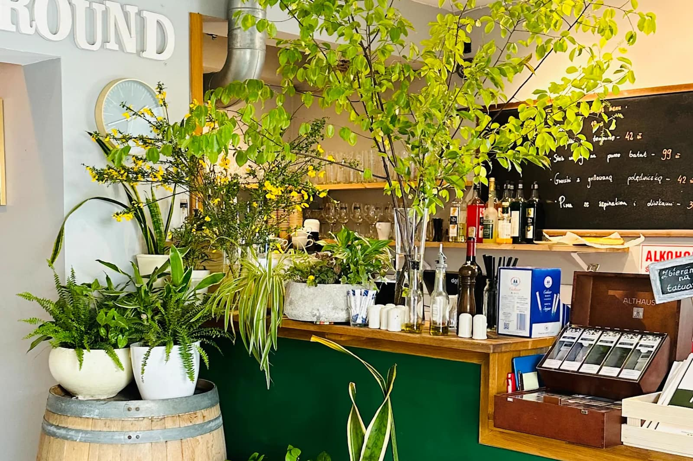
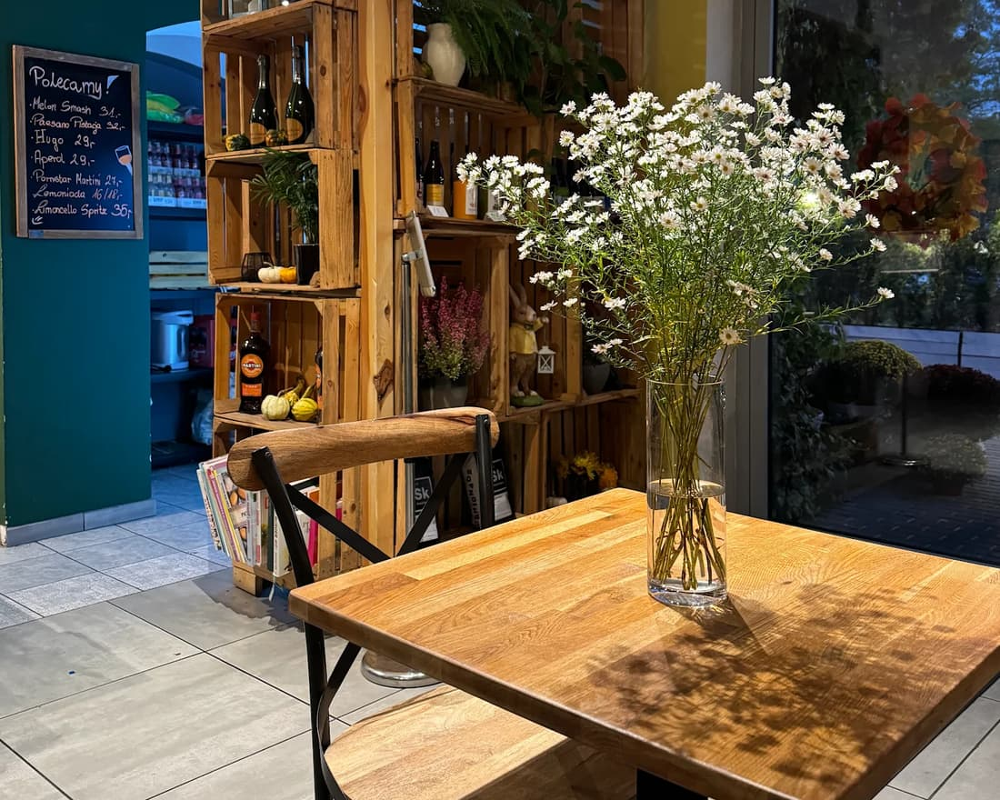
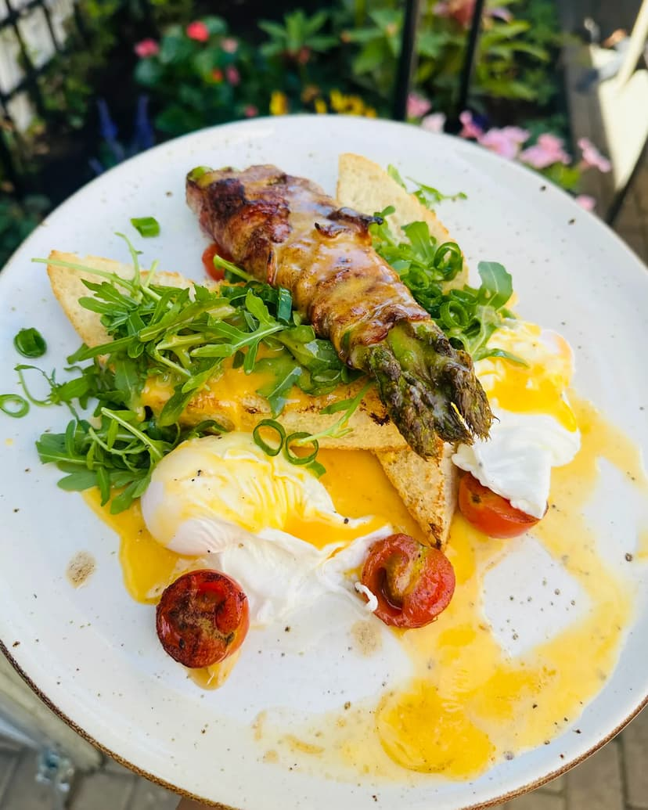
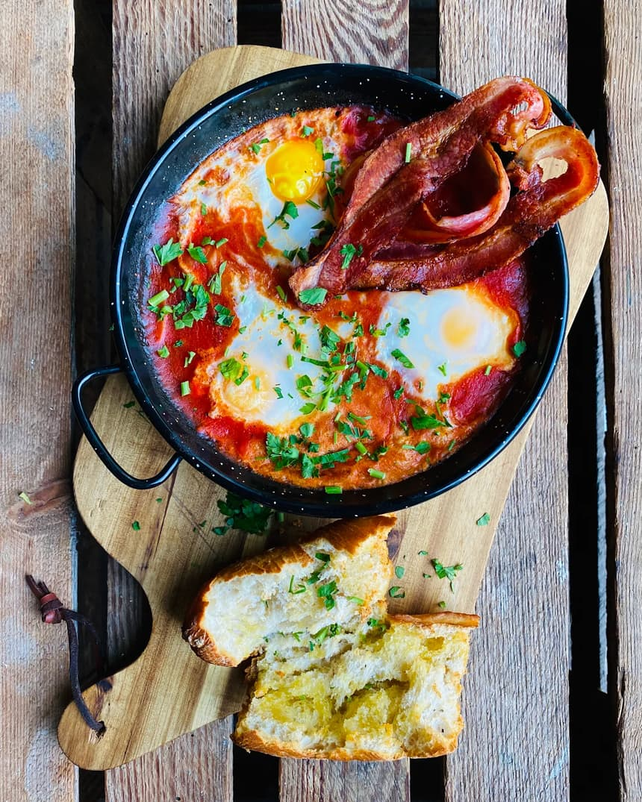
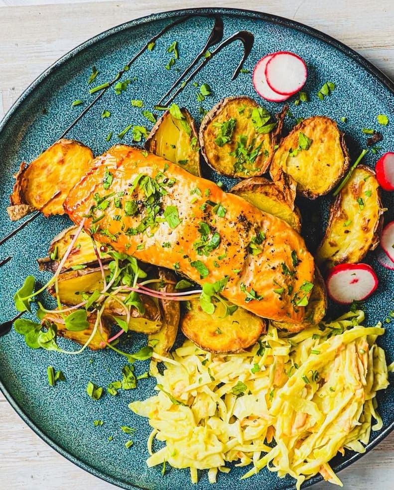
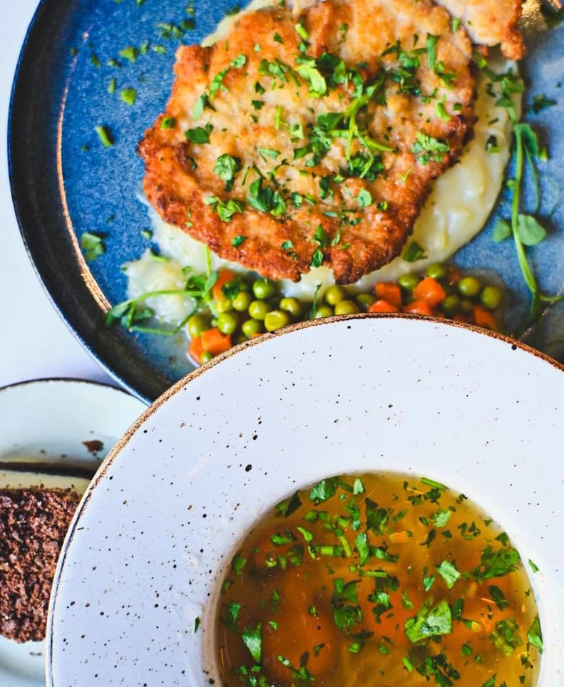

Świeżo przygotowane · sezonowo
Lily's
Bistro na Tarchominie — śniadania od rana, domowy chleb i kuchnia z sezonu

Kilka słów o nas
Lokalne tradycje w nowoczesnym wydaniu
Lily's Bistro to kameralne miejsce na Tarchominie, w którym chleb wypiekamy u siebie, a kartę układamy wokół tego, co przynosi sezon. Śniadania serwujemy od rana, a potem płynnie przechodzimy w lunche i kolacje.
Wnętrze pełne roślin, drewna i miękkiego światła powstało po to, żeby chciało się tu zostać dłużej. Wpadnij na kawę, zjedz coś dobrego, poczuj się jak u siebie.
Zielona oaza w środku miasta. Wchodzisz i od razu zwalniasz — a jedzenie robione jest na świeżo i pięknie podane.
Wpadamy na śniadanie w każdy weekend. Obsługa serdeczna i bez pośpiechu, a domowy chleb to osobny powód, żeby tu wracać.
Proste rzeczy zrobione naprawdę dobrze, podane szybko, w klimatycznym wnętrzu. Dokładnie takie miejsce, jakiego brakowało na Tarchominie.




Odwiedź nas
Wpadnij na Świderską
Jesteśmy na Tarchominie, tuż przy parku. Rezerwacje najszybciej załatwisz telefonicznie — dzwoń śmiało.
- Adres
- ul. Świderska 137
03-128 Warszawa (Tarchomin) - Godziny
- Codziennie 9:00–22:00
- Telefon
- +48 880 713 352
- kontakt@lilysbistro.pl
Dane kontaktowe i mapa są ukryte w tej wersji demo.
w wersji demo